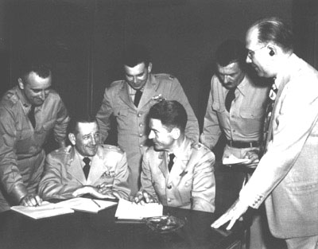
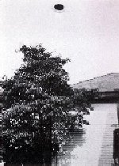
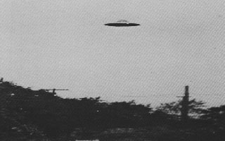

A Osceola (Wisconsin), des opérateurs radar au sol
repèrent pendant au radar plusieurs groupes de petits objets (jusqu'à 10) et 1 grand objet. Les
petits se déplacent du Sud-Ouest vers l'Est entre 50 et 60 noeuds (60miles/h à 70miles/h), se suivant les uns les autres. Le grand objet se déplace à 600
noeuds (700miles/h). Un pilote de F-51 Mustang confirme la détection d'un
des objets Cas Blue Book n° 1731 non expliqué.
À Oméga dans le canyon de Los Alamos (Nouveau-Mexique),
observation par 5 témoins indépendants durant d'un objet blanc tournant. L'objet part à l'arrivée
d'avions Hynek 1979.
Sidney Eubank se rend au poste de police d'Enid (Oklahoma) où il raconte au sergent
Vern Bennel qu'un disque énorme a survolé de près son automobile alors qu'elle roulait sur l'autoroute 81 entre
Bison et Waukonis. La violence du déplacement d'air a fait quitter la route à la voiture tandis que l'objet volait
vers l'ouest à toute allure Vallée,
J., Anatomy 134.
A la base de l'USAF de Langley (Virginie),
le capitaine D. G. Moore, du système de contrôle de traffic aérien, détecte durant un objet volant
filant vers la base à à environ 2600miles/h à une altitude
inférieure à 5000piedsCas
Blue Book n° 1732? non expliqué.
Moore et W. Yhope, représentant de l'électronique Gilfillan, repèrent durant
une cible radar se déplaçant, s'arrêtant , puis repartant très très rapidement Cas Blue
Book n° 1732? non expliqué.
Conférence du 29 au Pentagone, à la suite des
nombreuses
observations dans la région de Washington. On peut y voir de gauche à droite : Roy James, Ramey, Ruppelt, Samford, Bower et Griffing

A la suite des nombreuses observations d'ovnis dans la région de Washington, le général Samford décide de réunir une commission d'étude pour déterminer s'ils sont
intelligemment pilotés. Une conférence de presse est tenue au Pentagone,
peut-être la plus grande en temps de paix (photo ci-contre). Assis, le général Roger
Ramey, directeur adjoint des opérations (l'homme du démenti de Roswell en ), et le général John Samford, directeur du Renseignement aérien. Derrière eux, le lieutenant Edward Ruppelt, nommé récemment responsable de la commision d'enquête Blue Book. Au cours de la conférence de presse, Roy James, envoyé à Washington pour discuter des observations, explique
avec d'autres que les signaux apparus sur les radars ont été causés par une inversion thermique. L'étude des
conditions météorologiques cette nuit-là ne corroborre nullement cette explication. Le capitaine James est également
invité à une émission radio nationale, Face the Nation.
L'International News Service annonce que l'Air Force a révélé aujourd'hui que des pilotes de jet ont été placé en alerte nationale de 24 h contre les "soucoupes volantes" avec ordre de les descendre si elles
refusent d'atterrir. Robert Farnsworth, président de la U.S. Rocket Society, écrit une lettre à la
Maison Blanche pour protester du fait qu'une action hostile contre les ovnis, pourrait causer d'incroyables
souffrances et mortsCox, Billy: "U.S.
skies were as deadly as Korea", Herald Tribune, 18 février 2008.
Des officiers du FBI rapportent les propos tenus par des représentants de l'USAF lors d'une réunion qu'ils eurent avec eux. Ces derniers expliquent aux policiers
que, selon leur centre de renseignement de Wright Patterson, les
observations de soucoupes volantes remontent à plusieurs
siècles et leur nombre varie en fonction de la publicité qui en est faite. Les militaires ajoutent que ces soucoupes apparaissent plutôt dans les
zones de fort trafic aérien. Selon eux, il ne s'agit pas de missiles venus d'autres pays, et n'excluent pas
que ces objets soient d'éventuels vaisseaux d'autres planètes comme
Mars.
A Miami (Floride), un ovni très rapide est filmé. Le film est soumis à l'USAF, jamais
diffusé.
ou A Merced (Californie),
Herbert Mitchell et un employé observent durant un objet sombre en forme de disque, suivit d'une
lumière argentée à 2 longueurs derrière lui, s'incliner sur le côté, plonger, hésiter puis finalement effectuer des
cercles très rapidement Cas
Blue Book n° 1738 non expliqué.
Photo prise à Passiac

Photo prise à Passiac

A Passiac (New Jersey), George J. Stock possède un magasin
de réparation de tondeuse à gazon. Alors qu'il est en train de travailler sur l'une d'elles dans son jardin, il voit
tout d'un coup une soucoupe volante alors qu'il regarde en l'air. Il appelle alors son père dans la maison : Apporte
mon appareil photo ! Apporte mon appareil photo ! et son père sort avec son appareil photo reflex économique.
George le saisit et se dépêche, avançant et reculant pour avoir l'ovni dans son viseur et prend des clichés aussi vite qu'il le peut. L'objet arrive directement
au-dessus de sa maison depuis la tour IT&T, un batiment tubulaire proche. Il est à 20pieds ou 25pieds du sol environ. Il
ralentit, reste en survol un moment, puis accélère et vole au loin par-dessus de le jardin. L'observation n'a duré
que ou . Stock a eu le temps de prendre 7 photos.
A Ennis (Montana), des membres du personnel de l'USAF sont alertés de l'arrivée d'ovnis depuis Seattle (Washington). Ils s'agit de 5
objets plats en forme de disque. L'un d'eux reste stationnaire , tandis qu'un autre tourne autour
de lui. L'observation dure Cas Blue Book n° 1747 non expliqué.
A Wichita (Kansas), Douglas et Hess, employé d'un magasin
de l'USAF à l'Aéroport Municipal, observent durant un objet circulaire
blanc brillant à l'arrière plat voler très rapidement, puis stationner au-dessus des
installations de Cessna Aircraft Co. Cas Blue Book n°
1739 non expliqué